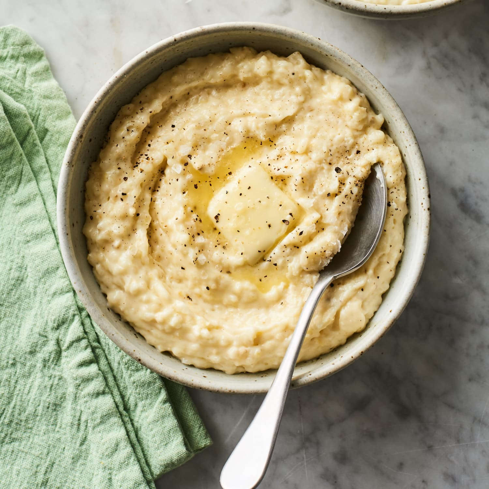

Grits

Creamy Southern Grits
This classic grits recipe yields a rich and creamy side dish with a smooth, comforting texture. Made with stone-ground grits cooked in water
(or a mix of water and milk), it achieves a perfect balance of flavor and creaminess. The grits are seasoned with salt and enhanced with butter,
and optionally cheese, to create a luscious, savory base that pairs well with a variety of dishes. It's a versatile and satisfying accompaniment,
ideal for breakfast or as a side for lunch or dinner.
Recipe
- 1 cup stone-ground grits (not instant)
- 4 cups water (or you can use a combination of water and milk for creamier grits)
- 1 teaspoon salt
- 2 tablespoons butter
- 1/2 cup grated cheese (optional, cheddar is a popular choice)
Steps
- Boil Water: In a medium saucepan, bring 4 cups of water (or 2 cups water and 2 cups milk for extra creaminess) to a boil. Add 1 teaspoon of salt.
- Add Grits: Gradually whisk in 1 cup of grits to prevent lumps. Reduce the heat to low.
- Simmer: Cover the pot and let the grits simmer gently, stirring occasionally. Stone-ground grits can take 30-40 minutes to cook, so be patient.
Stir frequently to prevent sticking and ensure even cooking. If the grits become too thick, you can add a bit more water or milk to reach your
desired consistency.
- Add Butter and Cheese: Once the grits are creamy and tender, stir in 2 tablespoons of butter. If you're using cheese, add it now and stir until
melted and fully incorporated.
- Season to Taste: Taste the grits and adjust the seasoning if needed. You can add more salt, pepper, or even a dash of hot sauce if you like a
bit of spice.
- Serve: Serve the grits hot as a side dish or a base for other ingredients like shrimp, sausage, or vegetables.